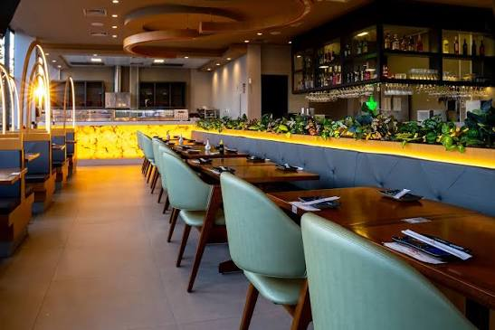

RESTAURANTE JAPONÊS
Uma experiência japonesa em cada detalhe
Bem-vindo ao Satoshy, um restaurante criado para proporcionar uma experiência especial através da culinária japonesa.
Preparados com ingredientes selecionados e atenção aos detalhes, nossos pratos combinam sabor, qualidade e tradição.

Conheça nossos destaques
Algumas das opções que fazem parte da experiência Satoshy.
Sushis
Opções preparadas com ingredientes selecionados para proporcionar uma combinação equilibrada de sabores.
Ver opçõesSashimis
Cortes cuidadosamente preparados para valorizar a qualidade e o sabor dos ingredientes.
Ver opçõesPor que escolher o Satoshy?
Qualidade
Selecionamos nossos ingredientes com cuidado para manter a qualidade dos pratos.
Dedicação
Cada pedido é preparado com atenção aos detalhes e ao sabor.
Variedade
Nosso cardápio possui opções para diferentes gostos e momentos.
Experiência
Queremos que cada visita ao Satoshy seja agradável e especial.
Pronto para conhecer o Satoshy?
Confira nosso cardápio e descubra suas próximas opções favoritas.
Acessar Cardápio